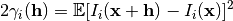
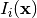

Provides histogram (proportion) and variogram (indicator variogram) functions.
The variogram function is defined as follows:

where  is indicator function for category
Contents:
Connectivity module
Image module